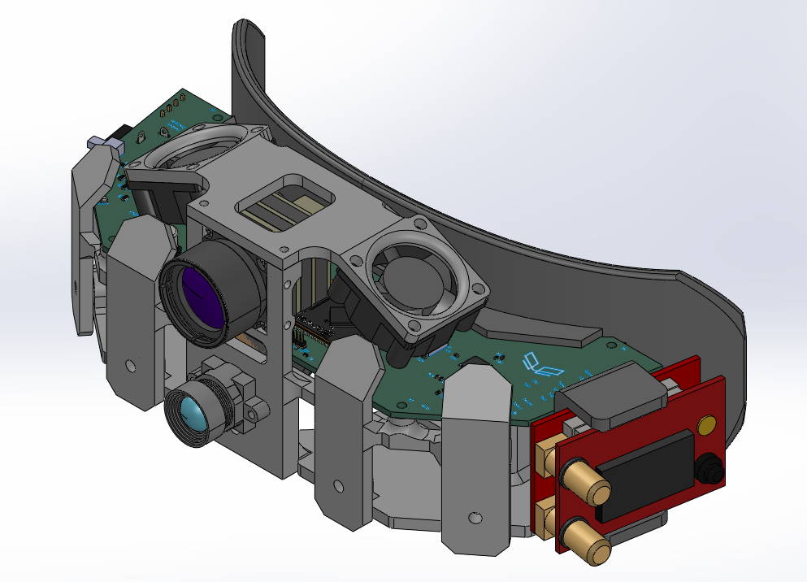
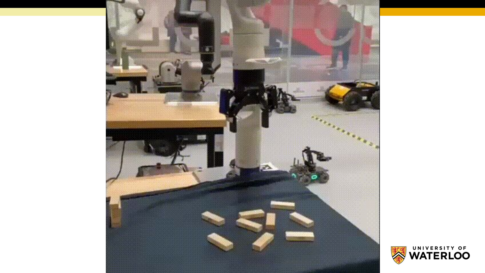

firmware engineer
Hi, I'm Prateek.
I write firmware — bare-metal drivers in C on STM32, Verilog on FPGAs. Sometimes both in the same project.
Projects
selected work · 9 completedSTM32 quadcopter
Bare-metal flight stack on STM32F446RE — MPU6050 + LIS3MDL sensor fusion, PID loop, PWM motor control, UART telemetry.
Timberwolf VCU
Vehicle Control Unit + BMS firmware for an Ontario EV pickup truck — async Rust on embassy-stm32, safety-critical fault architecture, HV contactor sequencing, CAN bus for all supplier ECUs.

Vision AI — IR night vision headset
FPGA video pipeline for a head-mounted IR night-vision system. Verilog on Tang Primer 25K — OV5640 capture, I²C bring-up, line buffering, FLCOS display drive.

8-bit breadboard computer
A Turing-complete 8-bit CPU built from discrete logic — ALU, register file, RAM, control unit, all wired up on breadboards. Custom assembly language for programming it.
6502 computer + VGA card
A working 6502-based 8-bit computer on breadboards, paired with a TTL-logic VGA video card generating real HSYNC/VSYNC signals to a monitor.
Autonomous robot navigation
A* path planning, particle filter localization from LiDAR + odometry, and PID trajectory control on a ROS2 mobile robot.

Jenga Mosaic robot
Kinova Gen3 robotic arm pick-and-place system — reserve brick selection from a disordered pile and Cartesian path execution to expand a Jenga mosaic.
UART bootloader
A custom UART-based bootloader for the STM32F446RE — receives firmware over serial, writes to flash, jumps to the application.
SAI audio driver
Serial Audio Interface driver for the STM32 NUCLEO-F446RE — I²S/SAI configuration, DMA streaming, audio peripheral bring-up.
STM32 USB
USB device firmware on the STM32F446RE — descriptor setup, endpoint configuration, host enumeration over the on-chip USB peripheral.
Bare-metal F446RE
No-HAL register-level drivers for the STM32F446RE — GPIO, USART, and ADC written from the reference manual against custom linker scripts.
Background
aboutI write firmware because I want to understand how devices actually work. Bare-metal showed me how hardware components communicate and operate as a system — and that just fed the curiosity. There's nothing quite like the moment a device you've been debugging for days finally comes to life and you can see it and interact with it.
Mechatronics Engineering, University of Waterloo — class of 2026.